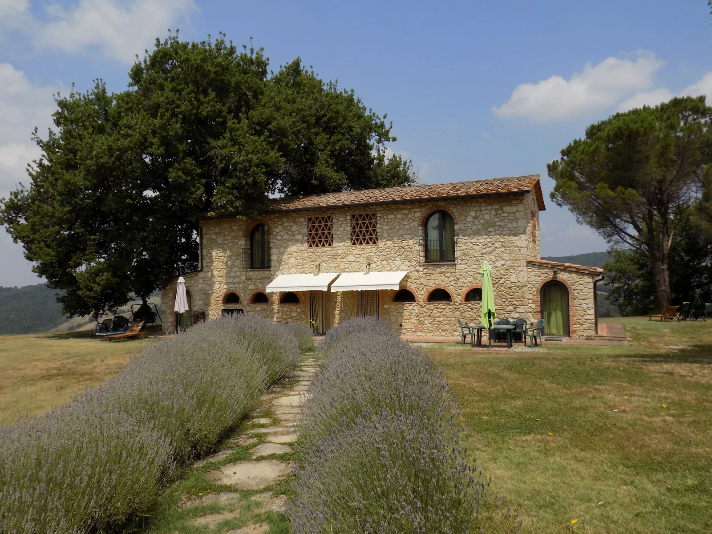
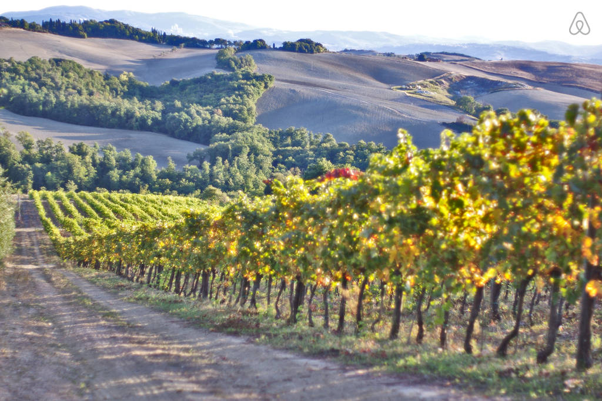
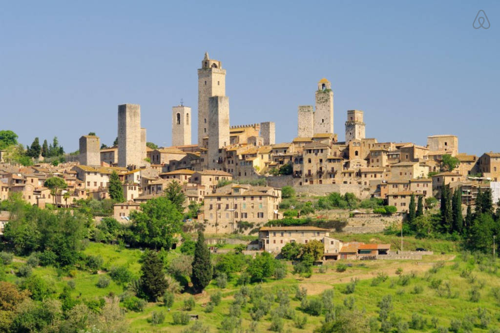

Podere Grignano
Two bedrooms with three beds in total.
Check dates on Airbnb
Volterra · Tuscany
Two holiday cottages on a stone farmstead between Volterra and San Gimignano.
Find your stayThe farm
Start the day on the terrace, take the road into Volterra, and come back to the shade of the trees. The land around the farmhouse is planted with olive trees and vines. Ask your hosts about the olive oil made here.
See the farm in pictures
Stay at Grignano
Pineta and Quercia are side by side. Each sleeps up to four guests and has two bedrooms and a kitchen. Check both Airbnb listings to see which is available on your dates.
Two bedrooms with three beds in total.
Check dates on AirbnbTwo bedrooms with four beds in total.
Check dates on AirbnbItalian accommodation registration (CIN) · IT050039B59T4CZ2H
Around the farm
Explore the area
